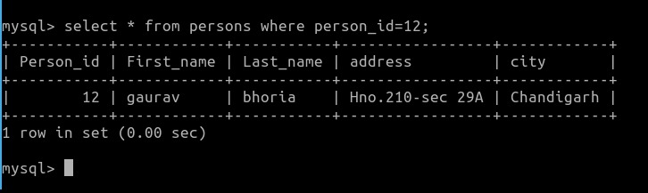
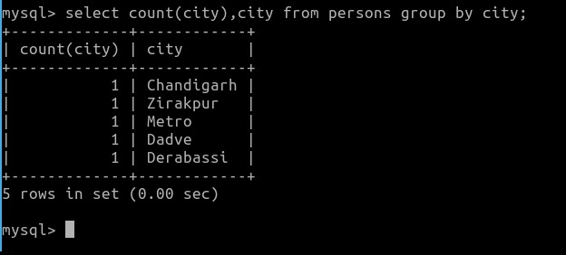
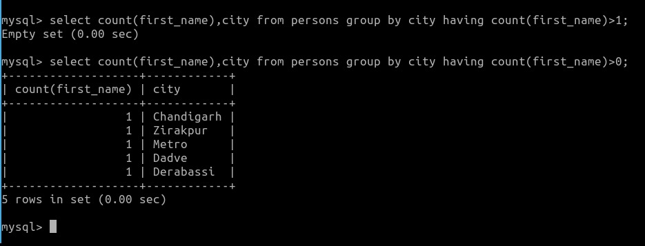
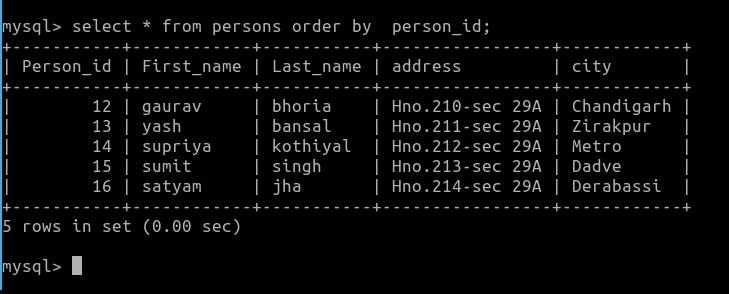
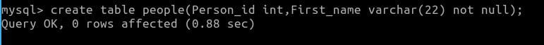
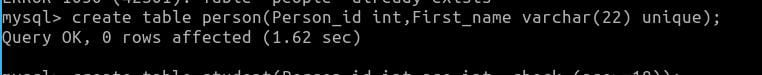
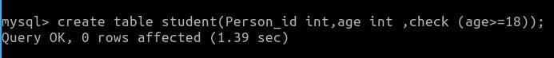

CLAUSES:
A clause in SQL is a built-in function that helps to fetch the required records from a database table.
SQL clause helps us to retrieve a set or bundles of records from the table.SQL clause helps us to specify a condition on the columns or the records of a table.
Different clauses available in the Structured Query Language are as follows:
1.WHERE CLAUSE: WHERE clauses can be used to limit the number of rows to be displayed in the result set,
it generally helps in filtering the records. It returns only those queries which fulfill the specific conditions of the WHERE clause.
WHERE clause is used in SELECT, UPDATE, DELETE statement, etc.
syntax:
SELECT * FROM TABLENAME WHERE CONDITION;
Example:

2.GROUP BY CLAUSE: The Group by clause in the Structured Query Language is used with Select Statement.
Group by clause is placed after the where clause in the SQL statement.
This clause is used for making the groups of the data.
We cannot use the group by clause without group functions i.e. aggregate functionns.
The Group By clause is specially used with the aggregate function,
i.e., max (), min (), avg (), sum (), count (), count (*) to group the result based on one or more than one column.
syntax:
SELECT Group_FUNCTION(COLUMNNAME) FROM TABLENAME;
Example:

3.HAVING CLAUSE: if we want to use any condition on a column in Group By clause at that time,
we will use the HAVING clause with the Group By clause for column conditions.
syntax:
TABLENAME GROUP BY COLUMNNAME HAVING CONDITION;
Example:

4.ORDER BY CLAUSE: This clause is used for sorting the data either in descending or ascending order.
We can sort the data of multiple columns.
By default it sorts the data in ascending order.
The corresponding column values will be displayed in the sequence in which we have obtained the values in the earlier step.
syntax:
SELECT COLUMN_NAME1, COLUMN_NAME2 FROM TABLE_NAME ORDER BY COLUMNAME;
Example:

CONSTRAINTS:
Constraints are used to limit the type of data that can go into a table.This ensures the accuracy
and reliability of the data in the table. If there is any violation between the constraint and the data action, the action is aborted.
Constraints can be column level or table level. Column level constraints apply to a column, and table level constraints apply to the whole table.
NOT NULL - Ensures that a column cannot have a NULL value.
Example:

UNIQUE - Ensures that all values in a column are different.
Example:

CHECK - Ensures that the values in a column satisfies a specific condition.
Example:

DEFAULT - Sets a default value for a column if no value is specified.
Example:
PRIMARY KEY - The PRIMARY KEY constraint uniquely identifies each record in a table.
Primary keys must contain UNIQUE values, and cannot contain NULL values.
A table can have only ONE primary key; and in the table, this primary key can consist of single or multiple columns (fields).
Example:
FOREIGN KEY - The FOREIGN KEY constraint is used to prevent actions that would destroy links between tables.
A FOREIGN KEY is a field (or collection of fields) in one table, that refers to the PRIMARY KEY in another table.
The table with the foreign key is called the child table, and the table with the primary key is called the referenced or parent table..
Example: